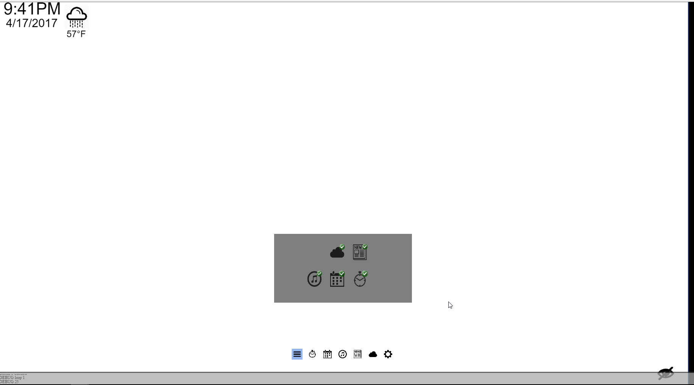
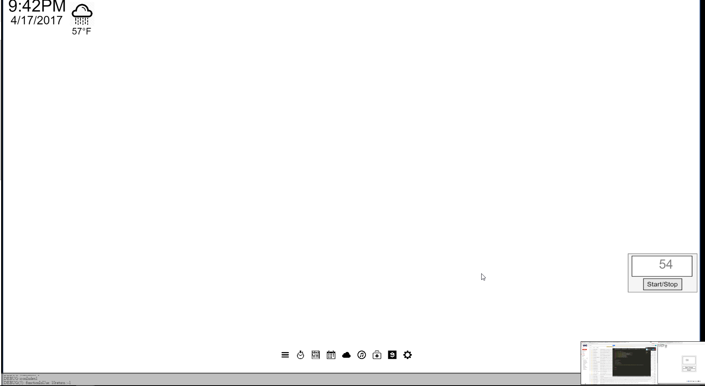

Jason Lee
Clickable buttons on all images Drag/Popup images Article application Included images/icons Calendar function and input text per day Weather application Timer application Health Icon 9Gag application
Shanil Lobanwala
Music play dragability icon dragability popup Implemented pin pad Implemented keyboard Implemented setting Mouse Control Startup creating profile Flow of the mirror
Alex (Weiheng) Ruan
-Created Pin Pad. -Created Keyboard. -Menu page (Add/remove functions) -Created settings and helped implement the settings. -Helped modify a page of the startup. -Helped add information to weekly report. -Added icons for use in the mirror. -Implemented Pin Pad -Implemented Keyboard -Implemented settings with help from group -Helped modify a few pieces here and there in the mirror
Disclaimer: Various resources and libraries used in this code:
https://forum.processing.org/one/topic/simple-countdown-timer-minutes-seconds-milliseconds.html https://processing.org/examples/scrollbar.html http://aaron-sherwood.com/processingjs/ http://processingjs.org/learning/topic/imagebutton/Link to our mirror! Link to youtube video! 2-3min demo!
This screen is the tun on screen. THe user will select a language that they wish to usee
This screen is the user screen. Here, the user can select between existing users, guest mode, and/or create a new user. Guest mode has limited functions.
This screen shows how creating a new user looks like. Pressing the + button brings up a keyboard prompting the user to input a username using the keyboard. When finished, press "Go".
After inputing a username and pressing "Go", this will bring the user to the pin section. Here the user is to enter the pin that the user wishes to be his password. Then the user will be prompted to enter it again as a confirmation.
This screen is what the guest user looks like. There are limited apps the guest can use. Facebook, twitter, limited calendar functions and health are not included in the guest mode. Currently selected is the menu that the user can select different applications. Apps that are already on the bottom menu are displayed with a green checkmark.
Here this is what happens if you select an existing user. The tab will light up and the user will be prompted to input their specific pin.

This is what an existing user screen looks like. Currently the menu is being displayed to show all the apps available to the user compared to the guest user.

This is the timer application. The user is self explanitary. Currently, the image shows the drag function that the user can do. The user can drag the application within the gray area. After the user lets go of the application, the gray area will go away.
By pressing "Set Timer" the user will be given a number pad to input a time. Through there, the user will input their time, press the enter button, and press the "Start" button. After that the time will update on the screen.
This shows the function that if you press outside any application, it closes it. If a timer or music player is still running when you exit the application, on the right bottom will give you a mini control panel.

This is the article application. It will display a list of current articles and also different options for types of articles to read from. This can be modified in the settings. We offer 4 different types of topics "Gaming, Business, Politics, and Tech". The bottom buttons will update depending on what is selected in settings. Default is Gaming, Business and Politics.
When you select the specific article, the application will update giving you a fuller version of the article. To go back to the list of articles, press the back button.
This is the calendar. All applications have the ability to be moved based on the user. In guest mode, the user can NOT input notes onto the calendar itself. Existing users have the ability to write notes onto the calendar.
In order to input a note onto the calendar, tap onto the calendar and a keyboard will display at the bottom. Here you can enter a message and the calendar will update its display with the text provided.
This is the weather application. Here the user can select between different forcasts such as Today, hourly, weekly, and to display the radar map.
This is the music application. Again, everything can be moved depending on the user. The music application works the same was as normal music applications. On the right side, you have the different song choices/playlist. Buttom bar is the volume control and the top bar is where the song is at currently.
As said with the timer, if music is still being played, then a small icon will display on the right side allowing the user to still control the music even when doing other things.
This is the health application. The user will connect using a fitbit and information such as steps, sleep, and weight will be displayed on a timeline manner. This is to allow the user to see any type or progress.
This is the 9gag application. Normal stuff really, press next post to go to the next post and past post to go back a post.
This is the settings menu. Here we have options such as: Bluetooth, Transparency, Icon Size, Wifi, Language, User Settings, Time Zones, Article Topics, Location, and Logout.
Bluetooth. Shows all connected devices with the mirror
This is transparency. Currently it works, but we pulled it from the main code because it lags up everything else.
Here you can change the sizes of all bottom icons.
Allows you to connect to existing wifi
Allows you to select different types of languages
The user settings allow you to change your name and/or change your pin number.
Allows you to set up different time zones. Any changes here will be reflected on the top left where the current time is.

Here the user can select different article topics. Max of 3, but we offer 4 choices. If more than 3 choices are selected, then the application will go to a default 3 topics.
Displays your current location
This button the eye at the bottom right, hides everything on the screen except the time, date, and weather at the top left. To unhide, select the eye icon again to bring back the UI.